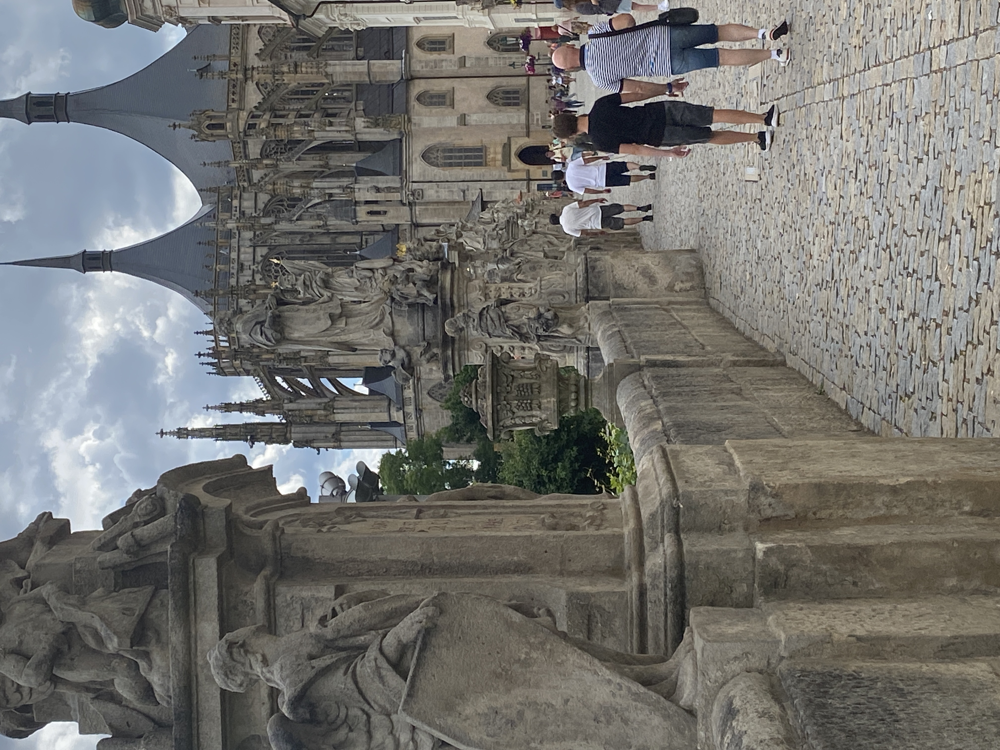
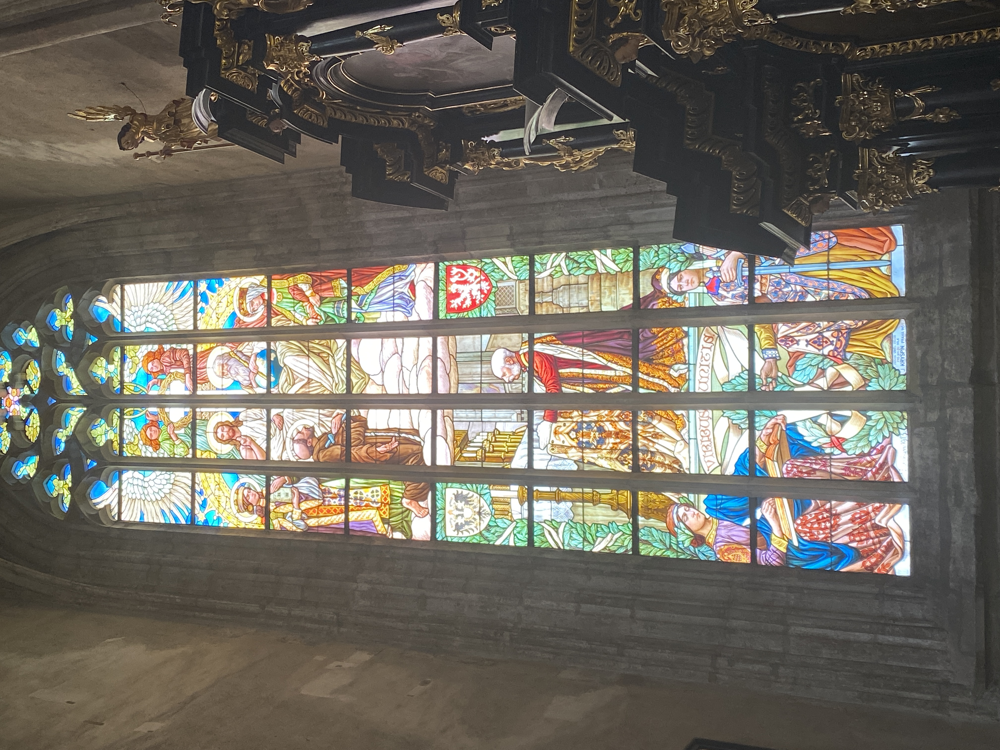
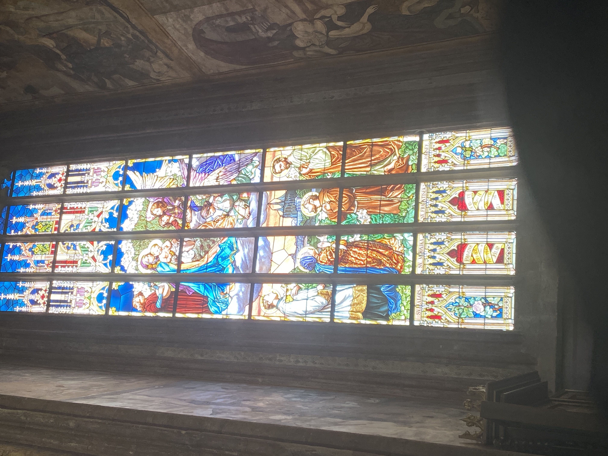
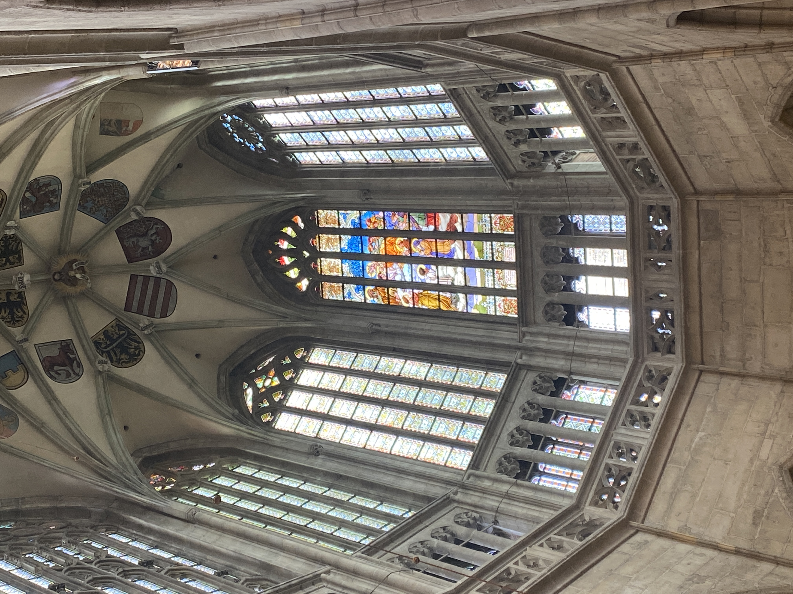
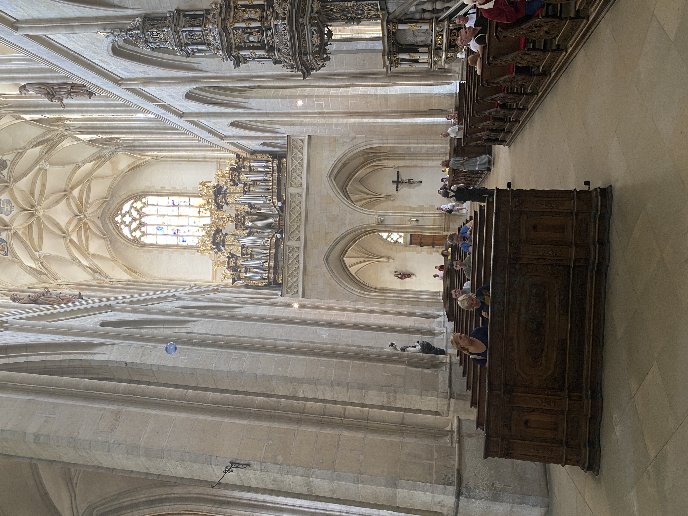

This is where - Construction began in 1388, funded by the immense wealth from Kutná Hora’s silver mines.
The cathedral was dedicated to St. Barbara, patron saint of miners and those in dangerous professions—fitting for a town built on mining.
It was intended not just as a religious site, but as a symbol of civic pride and independence from Prague’s archbishopric.
Chapter 2: Gothic with a Twist
The cathedral showcases Perpendicular Gothic style, with a three-tent roof, flying buttresses, and a triforium gallery—thanks to master builders like Benedikt Rejt.

Chapter 3: Saint Barbara’s Presence
In the Baroque period, Jesuits added altars, paintings, and sculptures, blending styles across centuries.
The final touches came in the 19th and early 20th century, when neo-Gothic restorations were completed. It was consecrated in 1905.

Chapter 4: - Stained Glass Windows
Rare Gothic frescoes, a Renaissance pulpit, and stained glass windows depicting Christian motifs and Czech history.
In 2014, a new stained glass window was added featuring Saint Agnes of Bohemia, continuing the tradition of sacred storytelling through art.

Chapter 5: Renaissance Meets Baroque
The cathedral, along with Kutná Hora’s historic center, was designated a UNESCO World Heritage Site in 1995.
It stands as a testament to the town’s medieval prosperity, spiritual devotion, and artistic ambition.
Chapter 6: Stained Glass Windows
František Urban’s early 20th-century windows blend Christian themes with Czech nationalism. In 2014, a new window honoring Saint Agnes of Bohemia continued the tradition.

Chapter 7: Built Outside Church Jurisdiction
The cathedral was constructed beyond the Sedlec Monastery’s reach, symbolizing Kutná Hora’s independence from Prague’s religious authority.

Chapter 8: Miners’ Tribute
St. Barbara, patron of miners, was chosen to reflect the town’s lifeblood—silver mining. Her presence sanctified their labor and risk.